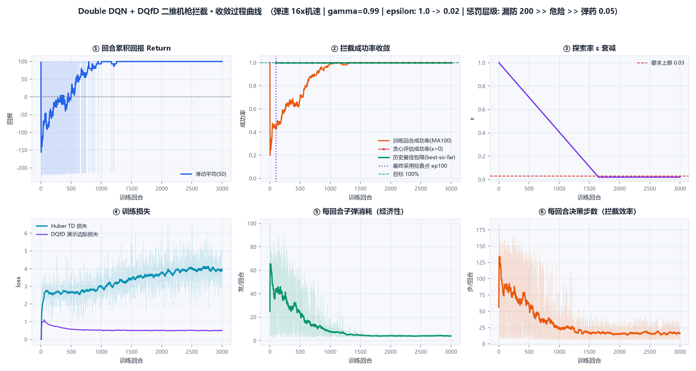
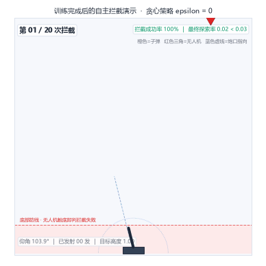

| 状态维度 / 动作数 | 13 / 10（5 档角速度 × 开火/不开火） |
| 网络 | 13-64-64-10 MLP（纯 NumPy） |
| 算法 | Double DQN + 经验回放 + 目标网络软更新 + 演示回放池 + 课程学习 |
| 折扣 γ / 学习率 | 0.99 / 0.00025 |
| 训练回合 / 全局步数 | 3000 / 91340 |
| 最终采用检查点 | 第 100 回合（Top-K 检查点 + 500 回合锦标赛复选） |
| ① 漏防惩罚 | 200.0（一次性，最严重） |
| ② 危险度惩罚 | -0.3×(1-y/H)² 每步，累计最坏 ≈ 11.36 |
| ③ 弹药惩罚 | -0.05/发，典型 ≈ 0.5，极限 ≈ 4.0 |
| 层级校验 | 通过 ✔ 漏防 > 危险 > 弹药 |
| 物理积分 | DT=0.04s，每步 6 次子步碰撞检测，命中半径 0.065 |
动画只展示训练完成后的贪心策略，不含训练过程可视化； 每次拦截均从无人机在顶部随机出现开始，到子弹命中结束。